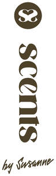

Trade Mark Journal No.2025/036 5 September 2025
UK00004253845 24 August 2025 (3)
Mark 1
Mark 2

- Class 3
- Creams (Cosmetic -); Cosmetic creams; Cosmetics and cosmetic preparations; Sunscreens [for cosmetic use]; Cosmetic moisturisers; Cosmetic soaps; Sunscreen [for cosmetic use]; Cosmetic facial lotions; Facial lotions [cosmetic]; Cosmetic soap; Lotions for cosmetic purposes; Cosmetic masks; Tonics [cosmetic]; Facial creams [cosmetic]; Facial creams [for cosmetic use]; Cosmetic preparations; Anti-aging creams [for cosmetic use]; Facial cleansers [cosmetic]; Anti-ageing creams [for cosmetic use]; Cosmetic kits; Kits (Cosmetic -); Facial moisturisers [cosmetic]; Anti-wrinkle creams [for cosmetic use]; Cosmetic skin fresheners; Cosmetic creams for the skin; Skin creams [cosmetic]; Skin creams [for cosmetic use]; Facial cream [for cosmetic use]; Serums for cosmetic purposes; Skin balms [cosmetic]; Skin cleansers [cosmetic]; Cosmetic skin enhancers; Cosmetic hair lotions; Cleansing creams [cosmetic]; Facial scrubs [cosmetic]; Facial toners [cosmetic]; Lip coatings [cosmetic]; Skin cream [for cosmetic use]; After-sun lotions [for cosmetic use]; Anti-ageing serums for cosmetic purposes; Anti-wrinkle cream [for cosmetic use]; Cosmetic creams and lotions; Toning creams [cosmetic]; Cosmetic facial masks; Facial masks [cosmetic]; Facial washes [cosmetic]; Toners for cosmetic purposes; Cosmetic facial packs; Facial packs [cosmetic]; Skin care lotions [cosmetic]; Cosmetic massage creams; Cosmetic hand creams; Skin toners [cosmetic]; Cosmetic products for the shower; Skin care creams [cosmetic]; Cosmetic creams for skin care; Hair care lotions [for cosmetic use]; Hair care creams [for cosmetic use]; Exfoliating scrubs for cosmetic purposes; Hair tonics [for cosmetic use]; Cosmetic nourishing creams; Skin care (Cosmetic preparations for -); Cosmetic preparations for skin care; Ointments for cosmetic use; Skin conditioning creams for cosmetic purposes; Moisturising gels [cosmetic]; Moisturising skin lotions [cosmetic]; Essences for cosmetic purposes; Cosmetics; Face masks; Face powder; Face wash; Face and body masks; Face scrub; Cleaning masks for the face; Face creams; Face oils; Face and body creams; Face wash [cosmetic]; Liquid soaps for hands and face; Face powder [for cosmetic use]; Face and body lotions; Exfoliating scrubs for the face; Face packs; Face cream (Non-medicated -); Toning lotion, for the face, body and hands; Face scrubs (Non-medicated -); Beauty tonics for application to the face; Lotions for face and body care; Beauty masks for hands; Body mask cream; Body mask lotion; Face creams for cosmetic use; Skin moisturizer masks; Clay skin masks; Hair masks; Facial masks; Skin masks; Cosmetic creams for firming skin around eyes; Hand masks for skin care; Facial wash; Body masks; Pores tightening mask packs used as cosmetics; Beauty masks; Masks (Beauty -); Facial washes; Scented body spray; Hair and body wash; Body scrub; Exfoliating body scrub; Body scrubs; Exfoliating scrubs for the body; Body wash; Body lotion; Cosmetic body scrubs; Body scrubs [cosmetic]; Body washes; Body soap; Body moisturisers; Body lotions; Body polish; Body and facial butters; Moisture body lotion; Body cleansing foams; Body and facial oils; Body butters; Body oils; Body spray; Body massage oils; Moisturizing body lotions; Body sprays; Body deodorants; Scented body lotions; Body mist; Body oil; Body butter; Moisturising body lotion [cosmetic]; Non-medicated body soaks; Scented body creams; Body cream soap; Body oils [for cosmetic use]; Gel scrub; Body fragrances; Body oil spray; Soaps for body care; Exfoliating scrubs for the hands; Body splash; Body gels; Body oil [for cosmetic use]; Exfoliating scrubs for the feet; Hand and body butter; Body sprays [non-medicated]; Body and facial gels [cosmetics]; Body milk; Skin cleansing lotion; Scented body lotions and creams; Body emulsions; Cakes of soap for body washing; Body and facial creams [cosmetics]; Perfumed body lotions [toilet preparations]; Facial scrubs; Body milks; Soap free washing emulsions for the body; Body care cosmetics; Body firming creams; Beauty creams for body care; Creams (Non-medicated -) for the body; Body cream for cosmetic use; Body gels [cosmetics]; Body creams [cosmetics]; Exfoliants for the cleansing of the skin; Skin lotion; Soap; Deodorant soap; Soap (Deodorant -); Bath soap; Shower soap; Soaps; Perfumed soap; Aloe soap; Handmade soap; Almond soap; Bars of soap; Bar soap; Skin soap; Waterless soap; Sugar soap; Soap products; Hand soap; Bath soaps; Scented soaps; Liquid soaps; Soap solutions; Liquid bath soaps; Cream soaps; Perfumed soaps; Aloe soaps; Liquid soap used in foot bath; Almond soaps; Soaps and gels; Facial soaps; Granulated soaps; Hand soaps; Bath lotion; Shampoo bars; Foaming bath gels; Bath salts; Shower and bath foam; Bath and shower foam; Bubble bath; Preparations for the bath and shower; Bath and shower preparations; Shower and bath preparations; Preparations for use in the bath or shower; Bath and shower gel; Shower and bath gel; Bath and shower gels; Bath gel; Bath cream; Bath milk; Bath creams; Bath powder; Bath oils; Bath gels; Bath bombs; Non-medicated bath salts; Cosmetic bath salts; Foams for the bath; Bath foams; Bath crystals; Bath foam; Foam bath; Bath oil; Bath beads; Bath and shower oils [non-medicated]; Bath herbs; Baby bubble bath; Bath flakes; Bath preparations; Preparations for the bath; Cosmetic preparations for bath and shower; Bath pearls; Liquid bath soap; Bubble bath preparations; Bubble bath [for cosmetic use]; Baby bath mousse; Bath lotions (Non-medicated -); Bath crystals (Non-medicated -); Bubble baths; Bath foams (Non-medicated -); Bath powder [cosmetics]; Non-medicated bath oils; Bath oils (Non-medicated -); Foam bath preparations; Aromatic oils for the bath; Aromatherapy lotions; Aromatherapy creams; Aromatherapy preparations; Potpourri sachets for incorporating in aromatherapy pillows; Massage oils; Massage oils and lotions; Scented oils; Ethereal oils for fragrancing; Facial massage oils; Essences for fragrancing; Perfume oils; Massage candles for cosmetic purposes; Oils for perfumes and scents; Massage oil; Scented water for fragrancing; Massage oils, not medicated; After-sun oils [cosmetics]; Essential oils as perfume for laundry purposes; Natural oils for perfumes; Non-medicated shower oils; Shower oils; Bath oils for cosmetic purposes; Ethereal essences and oils; Non-medicated massage preparations; Scented bathing salts; Scented sachets; Fragrance sachets; Aromatic potpourris; Room fragrancing products; Perfumery and fragrances; Cleansing lotions; Cosmetics in the form of oils; Reed diffusers; Air fragrance reed diffusers; Fragrance emitting wicks for room fragrance; Scented room sprays; Incense spray; Scented fabric refresher sprays; Scented fabric refresher spray; Scented linen sprays; Room perfumes in spray form; Scented linen water; Scented water; Scented wax melts; Granulated soap; Scented oils used to produce aromas when heated; Perfumed lotions [toilet preparations]; Perfumed creams; Perfumed oils for skin care; Beauty soap; Soaps in liquid form; Shampoo; Facial lotion; Hand lotion (Non-medicated -); Moisturising creams, lotions and gels; Day lotion; Shower creams; Hair conditioner bars; Hand lotions; Bathing lotions; Shower cream; Skin lotions; Lotions for the skin; Moisturizing creams; Room fragrances; Room perfume sprays; Room scenting sprays; Room fragrancing preparations; Air fragrance preparations; Fragrances; Fragrance preparations; Perfume water; Scents; Aromatics for fragrances; Perfumes; Fragrance for household purposes; Household fragrances; Air fragrancing preparations; Body cream; Body creams; Body soufflé; Body shampoos; Deodorants, for personal use in the form of sticks; Wax melts [fragrancing preparations].
Susanne Louis